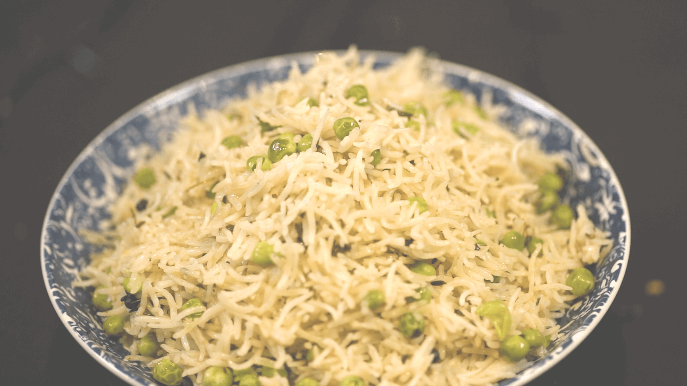

Home
Methi Matar Pulao

Description
Try this Methi Matar Pulao, a one-pot dish where fragrant basmati rice is cooked with aromatic fenugreek leaves
(methi) and sweet green peas (matar), creating a perfect balance of flavors.
Ingredients
- 3 tbsp oil
- 1 tsp cumin
- 10 cloves
- 10 black peppers
- 3 medium onions, thinly sliced
- 2 tsp ginger, chopped
- 3 green chilis, slit
- 2 tsp garlic, chopped
- 4 tbsp Kasoori Methi
- 3 cups water
- 1.5 cups Royal Basmati Rice
- 1 cup green peas
- Salt, to taste
Steps
- Wash the basmati rice under running water until the water runs clear. Soak the rice in water for about 20
minutes. Drain and set aside.
- Heat oil in a deep-bottomed pan or pressure cooker. Add cumin seeds, cloves, and black peppercorns. Let them
splutter.
- Add thinly sliced onions and sauté until they turn golden brown. Add chopped ginger, slit green chilies, and
chopped garlic. Sauté for another minute until the raw smell disappears. Add kasoori methi and mix well.
- Pour in 3 cups of water and add salt to taste. Bring the water to a boil. Once the water comes to a boil,
add the soaked and drained basmati rice along with green peas. Stir gently. Cover the pan with a lid and
cook the pulao on low heat until the rice is cooked and all the water is absorbed.
- If using a pressure cooker, cook for 1 whistle. Once cooked, fluff the pulao gently with a fork. Serve hot
Methi Matar Pulao with Raita.